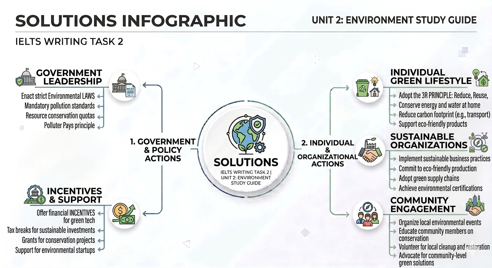

Vertical vs. Horizontal Cities

Chuyên đề: Quy hoạch đô thị, An ninh và Môi trường trong IELTS Writing Task 2.
1. Đô thị dọc (Vertical) vs. Đô thị ngang (Horizontal)
Vertical Cities (Thành phố dọc)
Tập trung vào các tòa nhà cao tầng để accommodate large numbers of people (đáp ứng lượng người lớn). Điều này giúp optimize the land use (tối ưu hóa sử dụng đất).
- ✔ Giải phóng đất cho mục đích khác: cultivating crops (trồng trọt).
- ✔ Alleviate traffic congestion (Giảm ùn tắc giao thông) nhờ mở rộng đường xá.
Horizontal Cities (Thành phố ngang)
Tạo ra các walkable communities (cộng đồng đi bộ), giảm nhu cầu sử dụng ô tô. Thúc đẩy kinh tế địa phương qua diverse commercial spaces (không gian thương mại đa dạng).
- ✔ Street-level storefronts (Cửa hàng mặt phố).
- ✔ Outdoor markets (Chợ ngoài trời).
| Key Words & Collocations | Giải nghĩa Tiếng Việt |
|---|---|
| Optimize land use | Tối ưu hóa việc sử dụng đất |
| Alleviate traffic congestion | Làm giảm ùn tắc giao thông |
| Robust public safety services | Dịch vụ an ninh công cộng vững mạnh |
👨🏫 Teacher's Note:
Trong Writing Task 2, khi bàn về quy hoạch, đừng chỉ nói "buildings". Hãy sử dụng cụm "residential complexes" hoặc "infrastructure development" để nâng Band điểm Vocabulary.
2. An toàn & Môi trường (Safety & Environment)
Vertical Safety Risks:
- Overcrowding: Increase risk of crime.
- Evacuation: Difficult in emergencies.
- Technical Failure: Relies heavily on elevators (Power outage concerns).
Horizontal Safety Benefits:
- Low crime rates: Neighbors know each other better.
- Navigation: Emergency vehicles navigate easily.
- Prevent/Deter: Community engagement deters criminal activity.
3. Đồng bộ (Uniformity) hay Độc bản (Uniqueness)
Ưu điểm của Uniformity
Ưu điểm của Uniqueness
Ví dụ điển hình: Hội An (Việt Nam) & Amsterdam (Hà Lan).
- 🌟 Memorable Architecture: Thu hút khách du lịch.
- 🌟 Cater to lifestyles: Phục vụ đa dạng sở thích (Floating homes, modern apartments).
Practice Time!
Bài tập 1: Hoàn thiện đoạn văn dựa trên Topic Sentence sau:
Gợi ý sử dụng: Iconic landmarks, tourist attractions, property value, break the monotony.
Firstly, architecturally unique buildings often serve as iconic landmarks that function as major tourist attractions, thereby bolstering the local economy. For instance, structures with intricate designs break the monotony of conventional concrete buildings, creating a visually stimulating urban environment. Furthermore, an aesthetically pleasing facade can significantly increase its own property value and attract high-end investments, fostering a sense of prestige for the entire neighborhood.
Bài tập 2: Phân tích Vocabulary (Matching)